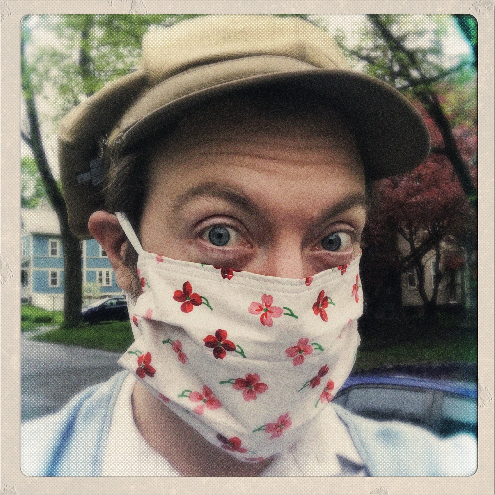

This is a paragraph. This is a long enough paragraph to generate a second line so that I can see that the ::first-line tag is working correctly in the CSS file. Thank you. And it is not quite long enough. Now it is. Yay!
Vestibulum ullamcorper tempus est id tristique. Donec quam dolor, tincidunt eu aliquet ac, mollis ac leo. In convallis, ante id pellentesque sagittis, ex elit tristique nisl, sed ornare elit augue non nisi. Nam tincidunt ante ac tristique egestas. Cras commodo arcu velit, sit amet efficitur felis fringilla ac. Duis ac fringilla mi. Aliquam quis aliquet risus, interdum volutpat lacus. Etiam diam mi, ultrices in metus vitae, aliquet tristique dolor. Proin ex tellus, aliquet eget erat at, luctus tincidunt tellus. Maecenas dictum ligula eu metus dapibus lobortis. Pellentesque mattis porttitor lorem ullamcorper cursus. Fusce mattis porttitor dolor ac ullamcorper.
Maecenas quis vulputate mauris, non malesuada velit. Cras quis neque massa. Ut pulvinar ligula non ullamcorper tempus. Morbi ultrices at tellus eget tempor. In hac habitasse platea dictumst. Aliquam mattis turpis eu justo rutrum, dapibus tincidunt lacus eleifend. Suspendisse ac massa at tellus pretium ultrices quis nec nulla.

Fusce cursus magna nunc, ac vestibulum arcu vestibulum et. Etiam non felis rutrum neque consectetur congue quis sed lectus. Maecenas sit amet tortor vitae orci ultricies fringilla ut elementum risus. Sed aliquet eros diam, at molestie nibh placerat nec. Nunc neque libero, mollis et rhoncus quis, ornare efficitur arcu. Donec interdum porttitor urna, eget imperdiet urna pellentesque nec. Ut sagittis enim at sapien blandit, ac fringilla lectus lobortis. Sed blandit arcu erat, non placerat mauris tincidunt sed.
Ut eleifend velit in nisi eleifend, pharetra venenatis tortor ultrices. Vivamus orci sem, vulputate non elementum sed, vehicula vel dui. Aliquam commodo vehicula nisl, id viverra erat vehicula in. Vivamus a dui hendrerit lacus placerat interdum nec eget leo. Cras commodo mi tristique quam consectetur, ultricies maximus lectus feugiat. Donec id nulla at quam luctus interdum. Aenean ullamcorper varius rutrum. Maecenas mattis sapien felis, vel tristique nisi interdum eget. Proin mauris sapien, feugiat tincidunt nibh id, ultrices scelerisque enim.